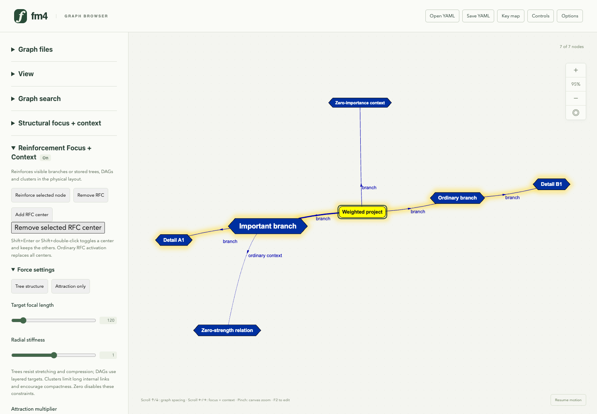
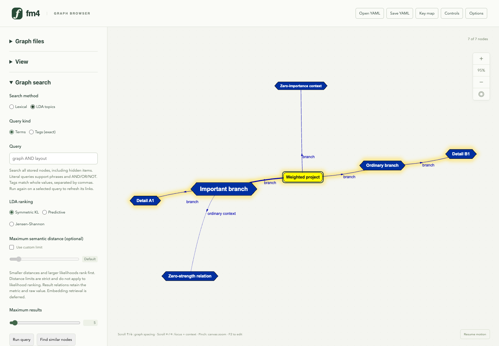
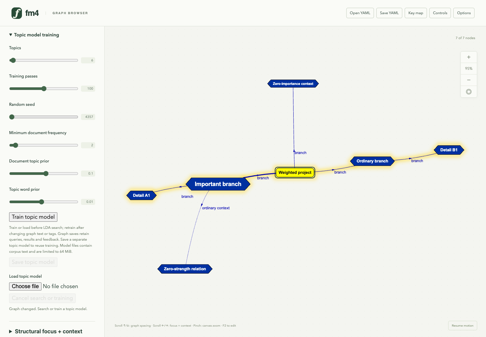
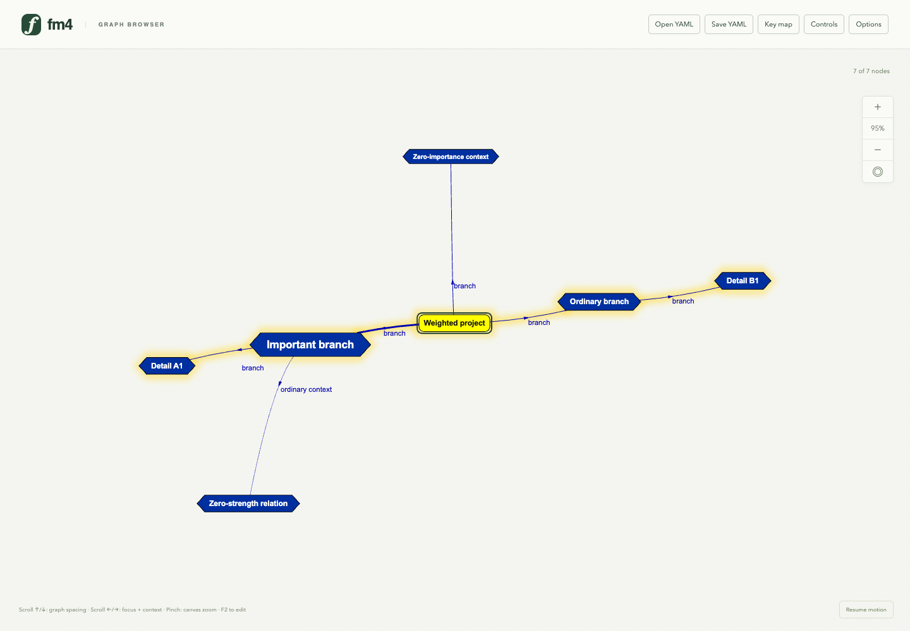

1. Layout controls as sliders and horizontal choices

The weighted-tree example is paused and its measured labels separated with the shipped readability command. RFC settings use sliders with live values. Short choices use horizontal radio groups; large example/substructure inventories keep menus. These are presentation controls over the existing graph and configuration owners.
2. Search methods, metrics and result limits

Lexical/LDA and term/tag choices are directly visible. The LDA metric names remain available to assistive technology and on hover. An unchecked custom-distance limit retains the engine defaults; selecting a metric or moving a slider keeps the existing retrieval boundary.
3. Topic-model settings remain local and inspectable

Topics, passes, random seed, vocabulary frequency and priors use sliders and live values. Wide magnitude ranges use logarithmic scales; integer arrows retain exact increments, including the random seed. The graph is not searched or retrained for this control demonstration.
4. Retract the controls and keep the document

Controls hides the panel and gives the graph its width. Settings, open sections and scroll position remain available when it reopens; quick search reveals its query field. Collapsing changes viewport geometry, preserving physical node coordinates and semantic data. The preference is session-only.